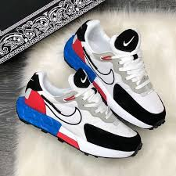
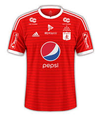
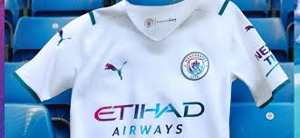
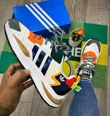

zapatillas Nike

Nike Air Max 270
Las Nike Air Max 270 combinan un diseño moderno con comodidad excepcional. Equipadas con una amortiguación Max Air en el talón, estas zapatillas ofrecen una pisada suave y un excelente soporte durante todo el día. Su parte superior de malla transpirable asegura un ajuste ligero y flexible, mientras que la suela de goma proporciona tracción y durabilidad. Perfectas para cualquier ocasión, desde el gimnasio hasta la vida diaria.
camiseta america de cali

Camiseta América de Cali
Muestra tu pasión por el América de Cali con esta camiseta oficial. Confeccionada en algodón suave y transpirable, presenta el icónico escudo del equipo en el pecho y detalles en rojo y blanco. Ideal para los hinchas que quieren lucir con orgullo los colores de su equipo tanto en el estadio como en el día a día.
camiseta mancity

Camiseta Manchester City
Demuestra tu apoyo al Manchester City con esta camiseta oficial. Confeccionada en tejido ligero y transpirable, presenta el distintivo escudo del club y colores celeste y blanco. Perfecta para los fanáticos que desean celebrar cada victoria con estilo y comodidad, ya sea en el campo de juego o en la calle.
zapatillas adidas

Zapatillas Adidas Ultraboost
Las Adidas Ultraboost combinan tecnología avanzada con un diseño elegante. Con una amortiguación Boost en toda la entresuela, ofrecen una sensación de confort y energía en cada paso. La parte superior de Primeknit se ajusta como un guante, brindando soporte y transpirabilidad, mientras que la suela de goma Continental garantiza tracción y durabilidad. Perfectas para correr o para un estilo casual diario.